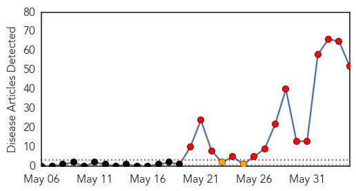
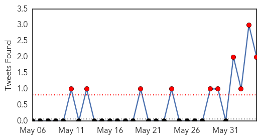
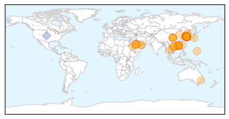
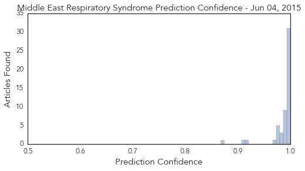

Toggle navigation
Early Warning
Daily Alerts
Middle East Respiratory Syndrome
Jun 04, 2015
Compare to:
-
Dengue Fever
Hemmorhagic Fever
Mold/Fungal Infection
Influenza
Meningitis
Pertussis / Whooping Cough
Cholera
Hepatitis
Chikungunya
Yellow Fever
Bubonic Plague
West Nile Virus
Swine Flu
Ebola
Measles
Unknown
Mumps
30 Day Trends
Web: 14
alerts
, 2
warnings
Twitter: 10
alerts
, 0
warnings
Top Articles:
Showing top 50 articles...
1.000
Jeju steps up MERS measures
1.000
What you need to know about Middle East Respiratory Syndrome
1.000
MERS: What you need to know about Middle East Respiratory Syndrome
1.000
MERS outbreak in South Korea can probably be beat: WHO
1.000
Health declaration required for passengers from RoK at Hanoi airport
0.999
SGGP English Edition- Vietnam asks Korean passengers to fill medical declaration
0.999
Middle East respiratory syndrome (MERS) Seminar
0.999
MERS: What you need to know about Middle East Respiratory Syndrome
0.999
South Korea reports fourth Middle East Respiratory Syndrome death as regional alarm grows
0.999
South Korea reports fourth Middle East Respiratory Syndrome death as regional alarm grows
0.999
S.Korea closes schools, quarantines 1,600 as 3rd patient dies — RT News
0.999
South Korea closes hundreds of schools as MERS cases mount
0.999
How Authorities Hope to Keep MERS From Spreading in the US
0.998
Spread of MERS is low, thanks to disease controls
0.998
Fever patients with travel history test negative for MERS-CoV
0.997
MERS spread in South Korea fuels questions on virus change
0.997
Deadly MERS virus spreading in South Korea
0.997
South Korea Says Most MERS Patients Got Virus at Same Hospital
0.997
MERS Spread in South Korea Fuels Questions on Virus Change
0.997
Health Ministry discusses measures against MERS-CoV
0.996
Singapore has measures in place in case Mers-CoV virus occurs here, says Ministry of Health, Others news, Health News, AsiaOne YourHealth
0.996
MoH has taken proactive stance to prevent MERS outbreak
0.996
Medical alert in South Korea due to the MERS virus outbreak
0.995
China's first MERS patient remains in serious condition
0.995
Is S. Korea dealing with mutated MERS? – The Korea Times
0.995
GVB closely monitoring outbreak of MERS in South Korea
0.994
200 South Korean Schools Suspend Classes Owing to Outbreak of Coronavirus
0.994
South Korea reports third MERS death as alarm grows
0.994
South Korea reports third MERS death as alarm grows
0.994
MERS causes travel cancellations to South Korea
0.994
MERS: South Korea Fears of Virus Spreading Rapidly
0.993
South Korea reports third MERS death as alarm grows
0.993
South Korea reports third MERS death as alarm grows
0.992
South Korea reports third MERS death as alarm grows
0.992
South Korea reports third Mers death as alarm grows, East Asia News & Top Stories
0.992
China prepares to tackle MERS
0.989
South Korea reports third MERS death as alarm grows
0.989
Borneo , Malaysia, Sarawak Daily NewsBorneoPost Online
0.989
MERS: 5 things to know
0.988
China prepares to tackle MERS - Xinhua
0.984
South Korea reports third MERS death
0.981
MERS virus in S. Korea: Officials trace the path of ‘index patient’
0.981
Mers: Third person dies and 800 schools now closed as alarm grows in South Korea
0.979
Tracing the path of South Korea's MERS 'patient zero'
0.978
Tracing the path of South Korea's MERS 'patient zero'
0.977
Tracing the path of South Korea's MERS 'patient zero'
0.976
Tracing the path of South Korea's MERS 'patient zero'
0.975
South Korea hit by third suspected MERS death
0.972
Taiwan heightens MERS preparedness
0.914
Pilgrims to Mecca must be vaccinated first: ministry
Top Tweets:
0.805
RT: S. Korea-Gov says 5 more coronavirus MERS cases&1 death of a prev known case - total cases/deaths = 41/4 -June 4 https:…
0.503
RT: South Korea - Gov announced new coronavirus MERS case who died -total cases now 36 incl. 3 deaths
https://t.co/9BbUr4Y…
Web/News Articles

Tweets

Article Locations

Article Confidences
